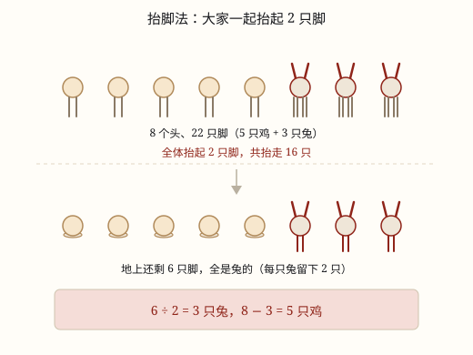

鸡兔同笼
假设全是鸡，差出来的脚数除以 2，就是兔的只数——除的是「每只差」，不是「兔有几只脚」。
| 所属主题 | 解决问题 |
|---|---|
| 所属模块 | 数与代数 |
| 课标学段 | 第三学段（5~6年级） |
| 前置知识 | 带小括号的混合运算 |
| 核心素养 | 模型意识推理意识运算能力 |
教材定位
人民教育出版社《2024年版》
对应四下数学广角「鸡兔同笼」：列表法与假设法。
课标要求
| 数与代数·数量关系 | 能解决生活中的简单问题，并能对结果的实际意义作出解释，经历探索简单规律的过程（例14），形成初步的模型意识和应用意识。 印刷第 21 页 行为动词：运用 |
|---|---|
| 数与代数·数量关系 | 能运用常见的数量关系解决实际问题，能合理解释结果的实际意义，逐步形成模型意识和几何直观，提高解决问题的能力。 印刷第 24 页 行为动词：运用 |
说明
笼子里关着鸡和兔，一共 35 个头、94 只脚。鸡 2 只脚，兔 4 只脚，各有多少只？这道题不能拿「头数乘脚数」直接算，因为两种动物的脚不一样多。但正因为不一样多，才有了下面这个巧办法。
假设全是鸡。35 只鸡应该有 35 × 2 = 70 只脚，可实际有 94 只，少了 24 只。这 24 只脚去哪了？被我们「假设」掉了：每把一只兔当成鸡，就少算 2 只脚（兔 4 只，当成鸡只算 2 只）。
于是 24 ÷ 2 = 12——有 12 只兔被当成了鸡，兔就是 12 只，鸡 35 - 12 = 23 只。检验一下：12 × 4 + 23 × 2 = 48 + 46 = 94，对上了。
这里最容易错的是最后那一步除法：除以 2，不是除以 4。4 是兔的脚数，跟「差」没有关系；2 才是「一只兔换成一只鸡，脚数减少了多少」。差出来的 24 只脚是被一只一只「换」出来的，所以要用每只的差去除。
还有一个更有意思的说法，叫抬脚法：让笼子里所有动物都抬起两只脚。鸡只有 2 只脚，一抬就坐下了；兔有 4 只脚，抬走 2 只还剩 2 只站在地上。一共抬起 35 × 2 = 70 只脚，地上还剩 94 - 70 = 24 只脚，全是兔的，24 ÷ 2 = 12 只兔。同一个 24，同一个 2，只是换了个讲法（图 1）。
学过方程的话，这道题还可以顺着写：设兔有 x 只，鸡就有 35 - x 只，4x + 2(35 - x) = 94，解得 x = 12。假设法是「先把答案猜成一个极端，再看差多少」，方程是「把不知道的数直接写进算式」，两条路都通向同一个 24。
使用场景
农场养殖：鸡舍兔舍里数头数脚，是这道题最原始的样子，也是最容易讲明白的样子。
停车场和车棚：自行车 2 个轮子、三轮车 3 个、小汽车 4 个，数车数和轮子数就能算出各有几辆。
租船租车：大船坐 6 人、小船坐 4 人，知道总船数和总人数，就能算出大船小船各几条。
买票：成人票和儿童票价钱不同，知道总张数和总钱数，就能算出各卖了几张。
答题计分：答对得 5 分、答错扣 2 分，知道题数和总分，也能算出答对几题——只要两种情况的「差」是固定的，就是鸡兔同笼。
注意点
假设全是鸡，求出来的是兔。因为「被换掉的那部分」才是兔。写完先对号，别把 12 只兔写成 12 只鸡。
除的是每只的差，不是脚数。鸡和兔差 2，自行车和三轮车差 1，成人票和儿童票差 3 元——差是几就除以几。
结果要是整数，而且不能超过总头数。算出 12.5 只兔，说明题里的数抄错了，或者假设用反了。
算完必须检验两件事：头数对不对、脚数对不对。两个都对，答案才站得住。
「抬脚法」不是另一条公式，它算的还是「总脚数 − 2 × 总头数」，只是把这一步讲成了一个故事。理解故事比记公式有用得多。
为什么是这样

图 1：抬脚法——鸡抬完两只脚就坐下了，地上剩下的脚全是兔的，每只兔留下 2 只
算理推导
35 个头，就是 35 只动物。鸡 2 只脚、兔 4 只脚，脚的总数完全取决于「有几只兔」——兔每多一只，总脚数就多 2。
先狠一点，假设一只兔也没有，35 只全是鸡：脚数 35 × 2 = 70。实际是 94，差了 24 只脚。
这 24 只脚不是凭空来的，是我们「少算」的：每把一只兔当成鸡，就少算 4 - 2 = 2 只脚。
24 里面有几个 2，就有几只兔被当成了鸡：24 ÷ 2 = 12。所以兔 12 只，鸡 23 只。除数是「每只差」，不是「兔有几只脚」。
换成抬脚法再看一遍（图 1）：全体抬起 2 只脚，一共抬走 70 只，地上剩 24 只。鸡抬完 2 只一只不剩，坐下了；兔抬完还剩 2 只站着。所以这 24 只全是兔的，24 ÷ 2 = 12 只兔。两条路算的是同一个减法。
最后检验：12 × 4 + 23 × 2 = 94 只脚，12 + 23 = 35 个头，两个数都对得上，答案才敢写下去。
动手实验
用 8 枚硬币当「头」，再准备一把小棒当「脚」。先给每枚硬币配 2 根小棒（这就是「假设全是鸡」），一共用掉 16 根。如果题目说一共 22 只脚，还差 6 根。把这 6 根两根两根地加给硬币：加满 4 根的那几枚就是兔。你会发现正好有 3 枚被加成了 4 根，于是 3 只兔、5 只鸡。再数一遍：3 × 4 + 5 × 2 = 22。「两根两根地加」就是那个除以 2，动手摆一次，比背十遍公式都清楚。
按场景的例题
例 1（场景：农业生产） 农场数鸡兔
农场里鸡和兔一共 35 只，数脚一共 94 只。鸡和兔各多少只？
解：假设全是鸡：35 × 2 = 70 只脚，比实际少 94 - 70 = 24 只。每只兔被当成鸡少算 2 只脚，24 ÷ 2 = 12 只兔，35 - 12 = 23 只鸡。
答：兔 12 只，鸡 23 只。
例 2（场景：行程出行） 车棚里的自行车和三轮车
小区车棚里停着自行车和三轮车，共 20 辆，数车轮一共 51 个。两种车各几辆？
解：假设全是自行车：20 × 2 = 40 个轮子，少了 51 - 40 = 11 个。每辆三轮车比自行车多 1 个轮子，11 ÷ 1 = 11 辆三轮车，20 - 11 = 9 辆自行车。
答：三轮车 11 辆，自行车 9 辆。
例 3（场景：校园生活） 班级活动租船
班级活动一共租了 10 条船，大船每条坐 6 人，小船每条坐 4 人，正好坐下 52 人。大船小船各几条？
解：假设全是小船：10 × 4 = 40 人，少了 52 - 40 = 12 人。每条大船多坐 2 人，12 ÷ 2 = 6 条大船，10 - 6 = 4 条小船。
答：大船 6 条，小船 4 条。
例 4（场景：购物消费） 儿童剧场卖票
儿童剧场成人票每张 8 元，儿童票每张 5 元，一共卖出 30 张，收入 198 元。两种票各卖多少张？
解：假设 30 张全是儿童票：30 × 5 = 150 元，少了 198 - 150 = 48 元。每张成人票多 3 元，48 ÷ 3 = 16 张成人票，30 - 16 = 14 张儿童票。
答：成人票 16 张，儿童票 14 张。
常用推论
假设全是鸡：兔 = (总脚数 - 2 × 总头数) ÷ 2。
假设全是兔：鸡 = (4 × 总头数 - 总脚数) ÷ 2，这时求出的是鸡。
抬脚法：总脚数 - 2 × 总头数 就是兔「多出来的那两只脚」的总数，再除以 2 得兔的只数。
检验：4 × 兔 + 2 × 鸡 = 总脚数，并且 兔 + 鸡 = 总头数，两条都成立才算对。
换成别的两种东西也行：只要两种东西「每份相差一个固定的数」，就用 总量差 ÷ 每份差。票价差 3 元就除以 3，车轮差 1 个就除以 1。
方程解法：设兔 x 只，列 4x + 2(总头数 - x) = 总脚数，解出 x 就是兔的只数。
易错点
错35 个头、94 只脚，算出差 24 只脚后，写成 24 ÷ 4 = 6 只兔。
为什么错4 是兔自己有几只脚，跟「差」没关系。差出来的 24 只脚是「每换一只少算 2 只」攒出来的，要用 2 去除。用 4 去除，等于把兔的脚数当成了差。
正确24 ÷ 2 = 12 只兔，35 - 12 = 23 只鸡。检验 12 × 4 + 23 × 2 = 94。
错假设全是鸡算出 12，就在答案里写「鸡 12 只，兔 23 只」。
为什么错假设全是鸡时，被「换掉」的是兔，所以 12 是兔的只数。这是假设法最常见的收尾错误。
正确兔 12 只，鸡 23 只。判断口诀：假设全鸡，先求兔；假设全兔，先求鸡。
错用抬脚法时，让所有动物抬起两只脚，算出地上还剩 24 只脚，又拿 24 ÷ 4 = 6 只兔。
为什么错抬完脚以后，鸡是 0 只脚，兔是 2 只脚，剩下的 24 只脚全是兔的，每只兔只贡献 2 只，不是 4 只。
正确24 ÷ 2 = 12 只兔。抬脚法和假设法算的是同一个减法，除数也必须是同一个 2。
错算出兔 12 只、鸡 23 只就直接写答案，不回头检验。
为什么错题目里的数一抄错，算出来的答案就会「看起来很像」但经不起核对；不检验等于放弃了唯一一次自查机会。
正确两个都要对：头 12 + 23 = 35，脚 12 × 4 + 23 × 2 = 94。
直观理解
想象笼子里的动物排成一排，你手里拿着一根魔法棒：先把每只动物都变成鸡，兔的四条腿被收走两条，笼子里一下少了 24 只脚。这 24 只脚，是 12 只兔各自交出来的 2 只，所以兔有 12 只。抬脚法是同一根魔法棒换个挥法：大家一起抬脚，鸡抬完就坐下，还站着的只能是兔。不管怎么讲，都是「差了多少只脚 ÷ 每只差几只脚」。
假设全鸡脚先算，差出脚数除以二；一只一换多两条，换了几只就是兔。